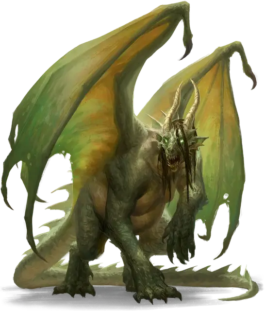

Отродье драконьей плоти
Dragonflesh Abomination
Огромный Монстр, нейтрально-злой

Класс Доспеха 15 (природный доспех)
Хиты 66 (7к12 + 21)
Скорость 30 футов, летая 40 футов
| мод | спас | ||
|---|---|---|---|
| СИЛ | 18 | +4 | +7 |
| ЛОВ | 14 | +2 | +2 |
| ТЕЛ | 17 | +3 | +6 |
| мод | спас | ||
|---|---|---|---|
| ИНТ | 5 | −3 | −3 |
| МДР | 12 | +1 | +1 |
| ХАР | 6 | −2 | −2 |
Иммунитет к состояниям испуг, отравление, очарование
Чувства пассивное Восприятие 11
Языки Общий, Драконий
Опасность 6 (2300 опыта)
Бонус мастерства +3
Особенности
Языки. Понимает Драконий и Общий, но не говорит.
Отвратительные миазмы. Отродье окружено ядовитым зловонием. В начале хода отродья любое существо в радиусе 5 фт. от него должно совершить спасбросок Телосложения Сл 14, иначе станет отравленным до начала следующего хода отродья.
Регенерация. Отродье восстанавливает 10 хитов в начале своего хода, если у него есть хотя бы 1 хит.
Действия
Мультиатака. Отродье совершает три атаки, используя Коготь, Кислотную слюну или их комбинацию. Оно может заменить одну из этих атак атакой Хвостом.
Коготь. . Рукопашная атака оружием: +7 к попаданию, досягаемость 10 фт., одна цель. Попадание: 8 (1к8+4) рубящего урона плюс 5 (1к10) урона ядом.
Хвост. . Рукопашная атака оружием: +7 к попаданию, досягаемость 15 фт., одна цель. Попадание: 10 (1к12+4) дробящего урона. Если цель существо, оно должно преуспеть в спасброске Силы Сл 15, иначе станет сбитым с ног.
Кислотная слюна. Дальнобойная атака оружием: +5 к попаданию, дистанция 60 фт., одна цель. Попадание: 10 (3к6) урона кислотой.
Кислотная отрыжка (перезарядка 5-6). Отродье извергает облако кислотного газа в 30-футовом конусе. Все существа в этой области должны совершить спасбросок Телосложения Сл 14, получая 28 (8к6) урона кислотой при провале или половину этого урона при успехе.
Описание
Отродье драконьей плоти — это финальная стадия трансформации Извратителя - неуклюжего монстра, чей поврежденный мозг пылает жаждой сокровищ. Его отвратительная трансформация стирает последние следы его предыдущей жизни. У него вырастает хвост и неуклюжие крылья, и он вырастает до огромных размеров, едва сохраняя двуногую форму. Его желудок бурлит кислотой, вызывая ядовитые испарения изо рта и наделяя его кислотным оружием дыхания. Его тело находится в постоянном состоянии роста и изменений, что позволяет ему быстро оправляться от своих ран.
Извратители драконьей плоти. Извратители драконьей плоти практикуют запрещенные ритуалы и рискованные эксперименты над собой, изменяя свое тело и разум, чтобы подражать драконам, которых они почитают. Они собирают части драконов — чешую, зубы, кожу, плоть, крылья и кости, — которые они подбирают вокруг логовищ драконов, берут с трупов драконов или покупают у торговцев и искателей приключений. Они сшивают, имплантируют или поглощают эти части дракона, пытаясь внедрить их в свои собственные тела и поглотить скрытую магию, которая сохраняется в драконьих останках.
В то время как большинство потенциальных извратителей становятся обладателями страшных шрамов или вовсе умирают после своих экспериментов, некоторые выживают как Мерзкие ужасы. Их разум искажается магической злобой, и от их прежнего "я" остается лишь тень. В самых крайних случаях получившаяся мерзость не содержит в себе никаких следов того человека, которым она когда-то была, и полностью управляется жаждой дракона к сокровищам.